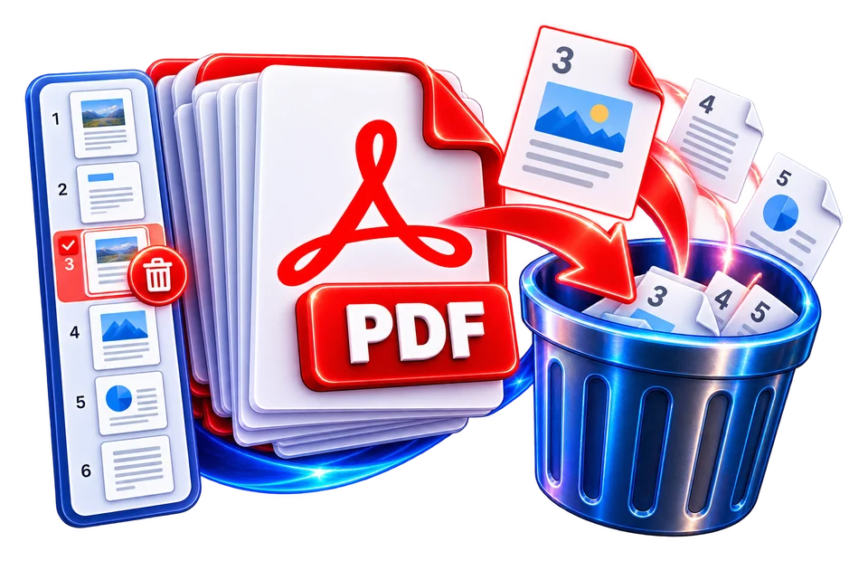

Load a document with identifiable pages
Remove page 2 from a three-page sample, then inspect both remaining pages.
Remove unwanted pages from a PDF.
Deleting a page changes sequence and may invalidate references in bookmarks or page numbering.

Remove page 2 from a three-page sample, then inspect both remaining pages.
Remove a blank or irrelevant PDF page.
Check the final page count before sharing.
Remove page 2 from a three-page sample, then inspect both remaining pages.
If a ten-page report contains an unwanted copy at page six, delete the correct copy and confirm that pages five and seven now follow each other.
Use the real tool above to verify the result. The example illustrates the workflow, not a guaranteed outcome.
If a ten-page report contains an unwanted copy at page six, delete the correct copy and confirm that pages five and seven now follow each other.
Printed page numbers, bookmarks and references may still reflect the original document; review the final copy before circulation.

Deleting a page changes sequence and may invalidate references in bookmarks or page numbering.
Deleting a page changes sequence and may invalidate references in bookmarks or page numbering.
Remove page 2 from a three-page sample, then inspect both remaining pages.
If a ten-page report contains an unwanted copy at page six, delete the correct copy and confirm that pages five and seven now follow each other.
Removing pages from a PDF creates a shorter document, and every later page may shift position. If a 12-page report loses pages 3 and 7, the output should contain 10 pages. But removing the original page 7 after deleting page 3 requires careful indexing if a program updates positions dynamically. A trustworthy interface should make the selection clear; users should confirm selected pages against original thumbnails before processing. Do not assume visible printed page numbers match the PDF viewer's sequential page positions.
For example, a PDF viewer may show "page 5" while the printed footer says "iii" because the file contains a cover and preliminary pages. If an instruction asks to remove the actual appendix page, locate it by content rather than relying solely on the printed folio. A page operation cannot infer which page is legally irrelevant or which signature page must remain. In a signed report or contract, deletion can alter meaning and may invalidate a digital signature or audit trail.
PDF pages can contain annotations, links, form fields and bookmarks referencing specific page locations. After deleting a page, a document-processing library may update or discard some associated references. Test clickable navigation and important form fields rather than relying only on the new page count. A file can open successfully yet have bookmarks that point to a different section or missing references. If the PDF has interactive elements or accessibility tags, ordinary page deletion may not preserve all of them.
The operation should not be confused with securely deleting sensitive information. A new output file without a page may no longer display it, but backup copies, linked attachments, embedded metadata and prior exported versions can still exist. Before distributing a revised document, inspect metadata, attachments and version history according to the document's privacy needs. Keep the original accessible to authorized editors for recovery but do not circulate it if the removed pages contained private data.
Count pages in the downloaded PDF and inspect the first, last and pages adjacent to every deletion point. If page 3 was removed, the new page 3 should match the original page 4, unless several pages were removed. Check page orientation and page size to ensure unaffected pages remain readable. If the program reports a corrupt output, retry with a known-valid PDF and identify whether encryption or malformed source objects are causing the issue. Removing pages is a structural change, not a way to compress images or rewrite text.
For a twelve-page pack, removing pages 4 and 8 should leave ten pages, but original printed page numbers on the remaining sheets may still show 1, 2, 3, 5 and so forth. A reference elsewhere such as “see page 8” might now point to the wrong place. Check appendices, contents lists, bookmarks and quoted page references after deletion. If the removed page contained the only signature or terms section, the shorter PDF may be misleading even if technically valid. Retain the original and give the derivative a descriptive name such as an excerpt; deleting pages does not inherently remove hidden attachments, metadata or information embedded elsewhere.
Deleting page 4 from a five-page proposal should leave four pages in their original relative order. The operation is simple visually, but the document may still contain a table of contents pointing to removed pages or page-number labels printed inside the remaining content. If you are removing a blank separator, verify that the output still has the expected logical sections. Deleting pages from a digitally signed file may break signature validation. Do not confuse deleting a page with selectively hiding confidential paragraphs on one page; the latter requires a different, secure process. Save the original before editing.
Keep the original. A saved export may not retain its earlier pages.
Yes. Modifying a digitally signed PDF may invalidate its signature or verification state.
The printed numbers are part of page content; they may need separate correction after deletion.
A sensible workflow should reject or clearly handle an empty resulting document. Verify the page count before download.